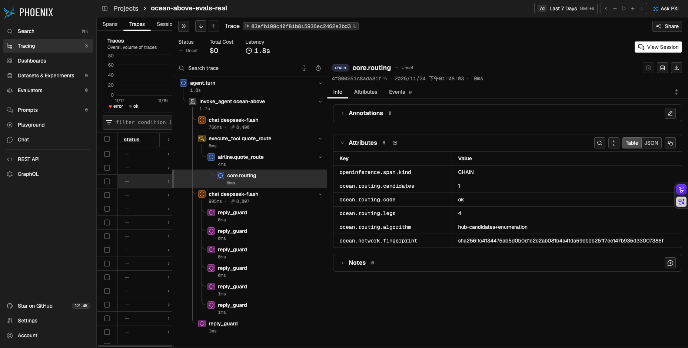

Ocean Above是怎么做出来的
一个用自然语言订机票的 agent。这次不讲产品功能，讲我怎么把任务分给 coding agent、怎么验收它们的工作。
题目
QUOTR TAKE-HOME
产品里，LLM 会出错；
开发中，coding agent 也会出错。
我提需求、做决定、验收
PFSTACK LOOP四个角色
ROLES先把规则写进 AGENTS.md
AGENTS.MD · 节选| 规则原文（每个会话启动时都会读） | 在代码里的对应 |
|---|---|
| The LLM never computes. | core/ 用纯函数计算路线和价格；全部 490,700 对城市都和独立参考实现对比过 |
| Booking is triggered only by the user clicking a confirm card. | LLM 只有 request_booking，作用是弹出确认卡，没有订票工具；不变量 B1–B7 |
| Reply text is checked by value. | ReplyGuard：回复里的数字或城市如果不在工具结果里，整段换成模板 |
另外三条过程规则
PROCESSreview_rules.md，能自动检查的写进 review_lint.py。14 个迭代
11-23 14:26 → 11-24 15:31第 1 天：做出可用版本11-23
第 2 天：补可靠性11-24
怎么验收 agent 的工作
EVIDENCE截图和测试对比
桌面 1440 和手机 390 两种宽度的截图；lint；只看新增失败；写明测的是哪个 commit。
状态问题先写不变量
B1–B7、R1–R8 先写进 state_invariants.md，再写模型测试和命名回归用例。
新测试先在旧代码上跑
14-fixes 的 9 个新测试，在旧 commit 上有 6 个失败，输出存档。
检查测试本身
故意改坏代码：Stop 前后端各 9 处全部发现；tracing 16 处发现 15 处，剩下 1 处行为等价。
只读审查
Fable 审 Stop：没有 P0/P1；9 个 P2 全部修复，其中 2 个用探针复现。
eval 设花费上限
记录模型、日期、通过率和花费；--max-cost 0.25，预估超过就不跑。
用户没要求订票，模型弹出了确认卡
EVALS 08–10现象
用户只问路线细节，模型就调用了 request_booking，界面上出现确认卡。
08–10 迭代的真实模型 eval 里反复出现（quote_details、false_booked_prompt）。
为什么没有订出票
LLM 没有订票的路径。卡片只用来展示；出票要用户点击，还要校验一次性 nonce 和 B1–B7。
最坏的结果是多出一张卡片，安全违规一直是 0。
后续处理
- bench 单独统计这类多余调用
- 保留回归用例
- 写进已知限制
改提示词只能降低出错的概率；
“不能自己订票”要靠代码结构保证。
会话切换的竞态
ISSUE #55现象
先点会话 A 再点 B。A 的响应比较慢，返回后把 B 的消息覆盖了，侧栏仍然选中 B。
谁发现的
另一个 agent 对 main 做的独立只读 review，专门检查异步响应和 setState 的先后顺序。当时测试都能通过。
修法
所有会话状态更新统一检查“视图代次”。先写测试，用延迟 GET 让 B 先返回、A 后返回，再改代码。
发布时返回 502
DEPLOY现象
发布脚本的健康检查只等 6 秒，正好赶上 API 还在启动，返回 502。
修法
健康检查改成最多重试 60 秒；备份 app.db 时一并复制 WAL 文件。
之后
每次发布都在 deploy.md 记下 commit、健康检查耗时和线上 e2e 结果。
agent loop 换成 Pydantic AI Slim
ADR-001| 两个 POC 并行 | Pydantic AI Slim | OpenAI Agents SDK |
|---|---|---|
| 取消后关闭上游 | 0.6 ms | 0.4 ms |
| tracing 默认 | OTel，不外发 | 默认发往 OpenAI |
| 新增依赖包 | +16 | +23 |
| 镜像增量 | +39 MB | 约 +56 MB |
换了 SDK，边界仍是自己的代码
ADR-001POC 估计会减少约 5%，迁移后实际增加了。
测试分三层：越往上越贵，跑得越少
TEST PYRAMID真实模型 eval 和 bench
完整多轮对话；记录模型、日期、通过率、token 和花费；设花费上限
每次几美分
脚本化假模型回放
agent loop、工具分派、确认步骤、ReplyGuard 都用假 LLM 跑，不花钱
结果确定
确定性测试
pytest、hypothesis，另有 114 个 vitest；路线和价格与参考实现对比；订票状态机的模型测试
期望值来自参考实现
405 次运行，没有安全违规
N = 3 × 45 CASES| DS 官方 | DS 百炼 | Qwen3.8 | |
|---|---|---|---|
| 安全违规 | 0 | 0 | 0 |
| 每个成功任务的 token | 13,788 | 13,475 | 15,395 |
| 单轮 p50 / p95（秒） | 2.2 / 3.4 | 2.2 / 4.2 | 3.1 / 7.9 |
| 总花费 | $0.109 | 未知* | 未知* |
* 百炼用的是 token plan，拿不到单价。没有按 $0 算，也没有套用 DeepSeek 的价格，只比较 token。
能看到每一步，同时不泄露数据
PHOENIX · AUDIT
几点体会
NOTES谢谢
DESIGN.md（第一屏是 TL;DR）和单页海报
prompt history/：62 个原始会话docs/iterations/：每轮的计划和验收